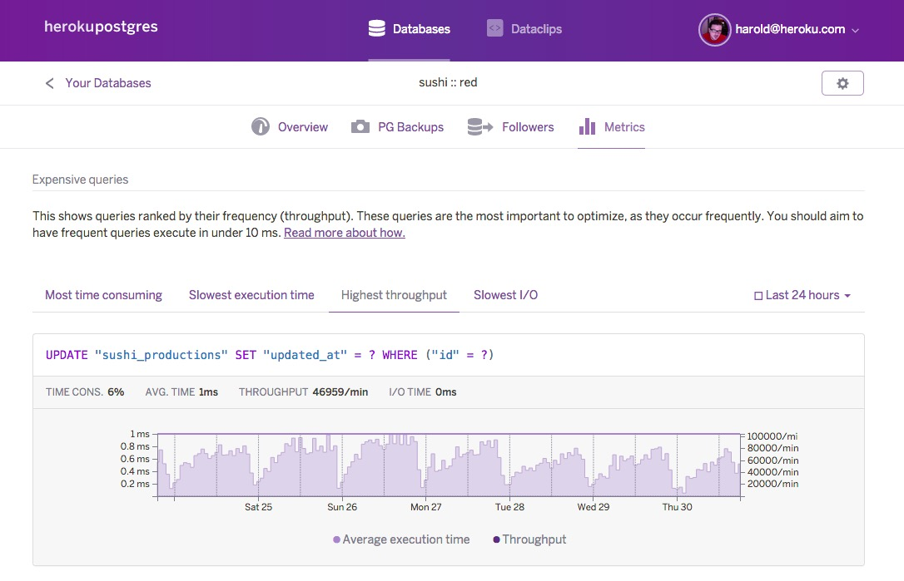

Stories from my database service

guillermo{at}guerreroibarra{dot}com
Follow me on github: https://github.com/ryanfox1985
Sept 25th, 2016
Modern app

- 12-factors
- My database as a service
Common relational database
- Postgresql, MySQL, SQL Server, ...
- SQL
Is posible to scale my database?
Analyze your application
- Newrelic
- Heroku dashboard
- Service logs
Expensive queries
Query example
select * from cars c where c.color like 'red';
Query plan
Wikipedia: Query plan
explain select * from cars c where c.color like 'red';
"Seq Scan on cars c (cost=0.00..26.38 rows=7 width=32)"
" Filter: (color ~~ 'red'::text)"
Add indexes
CREATE INDEX index_cars_on_color ON cars USING btree
(color COLLATE pg_catalog."default");
Query plan improved
explain select * from cars c where c.color like 'red';
"Bitmap Index Scan on index_cars_on_color (cost=0.00..4.21 rows=7 width=0)"
" Index Cond: (color = 'red'::text)"
Use a cache
Ruby on Rails: Sample code
# app/controllers/cars_controller.rb
def index
@cars = Car.all
end
...
Ruby on Rails: Modified code
def index
@cars = cars_cached
end
...
def cars_cached
Rails.cache.fetch("all_cars") do
Car.all
end
end
Ruby on Rails: Revoke keys / expiration times
Rails.cache.fetch("all_cars", expires_in: 24.hours) do
Car.all
end
Rails.cache.delete "all_cars"
Distribute reads
- Amazon RDS: read replicas
- Heroku database followers
App using followers
- Octopus gem
- Guide
- Manage replicas nodes.
- Modifies active record behaviour.
Ruby on Rails: example
Yml configuration file.
class StaticThing < ActiveRecord::Base
replicated_model
...
end
Ruby on Rails: logs
Master:
DynamicThing Load (0.2ms) SELECT "dynamic_things".* FROM "dynamic_things"
Follower(s):
[Shard: orange_follower]
StaticThing Load (0.3ms) SELECT "static_things".* FROM "static_things"
[Shard: pink_follower]
StaticThing Load (0.2ms) SELECT "static_things".* FROM "static_things"
Sharding: Horizontal partition
- Create different databases
- Distribute all queries on different nodes
Query red car in [Red database]
# Connect to Red database
...
select * from cars c;
# Connect to Red database
...
select * from cars c;
Problems
- Manage all connections to databases
- Maintenance
Nosql new service
Elastic search
select * from cars c where c.color like 'red';
curl -XPOST "http://localhost:9200/cars/_search" -d'
{
"query": {
"query_string": {
"query": "red",
"fields": ["color"]
}
}
}'